전자캐드기능사 (2003-07-20 기출문제)
1과목: 전기전자공학(대략구분)
1. 20[Ω]의 저항에 5[V]의 전압을 가하면 몇[㎃]의 전류가 흐르는가 ?
- 0.25[㎃]
- 2.5[㎃]
- 25[㎃]
- 250[㎃]
(정답률: 45%)

2. 두종류의 금속의 접합부에 전류를 흘리면 전류의 방향에 따라 주울열이 아닌 열의 발생 또는 흡수현상이 일어나는 것을 무엇이라고 하는가 ?
- 제어벡 효과
- 제 3금속의 법칙
- 페러데이 법칙
- 펠티어 효과
(정답률: 63%)
3.
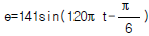
인 파형의 주파수는 몇[㎐]인가?- 120[㎐]
- 60[㎐]
- 50[㎐]
- 12.5[㎐]
(정답률: 68%)
4. i = Im sin ω t[A]로 나타내는 사인파 전류의 최대값은 ωt가 어떤 값에서 최대값을 갖는가?
- π
- π/2
- π/3
- π/4
(정답률: 73%)
5. 공진하고 있는 L.R.C 직렬회로에 있어서 저항 R양단의 전압은 인가 전압의 몇배인가?
- 인가 전압의 1/2 이다.
- 인가 전압과 같다.
- 인가 전압의 2배이다.
- 인가 전압의 4배이다.
(정답률: 56%)
6. 2 x 10-3[Wb]의 N극에서 나오는 자속은 얼마인가 ?
- -2 x 103[개]
- -2 x 10-3[개]
- 2 x 103[개]
- 2 x 10-3[개]
(정답률: 51%)
7. 공기중의 비투자율에 가장 근접한 것은 ?
- 6.33 x 104
- 1
- 9 x 1019
- 4π x 10-7
(정답률: 60%)
8. 반도체로 만든 PN 접합다이오드는 무슨 작용을 하는가?
- 증폭작용
- 정류작용
- 필터작용
- 변조작용
(정답률: 76%)
9. 다음 회로의 명칭은 ?
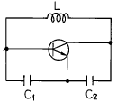
- 콜피츠형 발진기
- RC 발진기
- 하이틀리형 발진기
- 에미터 동조형 발진기
(정답률: 60%)
10. 발진주파수가 변동되는 주요원인과 관계가 먼 것은 ?
- 부하의 변화
- 주위온도의 변화
- 전원전압의 변화
- 발진조건
(정답률: 45%)
11. 전압 증폭도 10dB의 증폭기와 20dB의 증폭기를 직렬로 연결시켰을 때 종합증폭도는 몇[dB]로 나타내는가 ?
- 10
- 200
- 2
- 30
(정답률: 54%)
12. 증폭기 회로에서 특유의 크로스오버 일그러짐이 있는 것은 몇급 증폭기인가?
- A급
- AB 급
- B급
- C급
(정답률: 70%)
13. 주파수변조에서 신호 주파수는 4[㎑], 최대주파수 편이가 100[㎑]일 때의 변조지수는 ?
- 25
- 400
- 40
- 4
(정답률: 56%)
14. 위상변조에서 신호파 is = Ism cos 2π fst의 진폭에 따라 위상을 θ = θc+Δθ cos 2π fst 와 같이 변화시켰을 때 얻어지는 피변조파 공식은 다음과 같다. i = Im sin(2π fct+ Δθ cos 2π fst)에서 Δθ가 의미하는 것은 ?
- 대역율
- 반송파
- 변조파
- 최대 위상편이
(정답률: 45%)
15. 다음 그림은 펄스 파형을 나타낸 것이다. 펄스폭(pulse width)을 나타내는 것은?
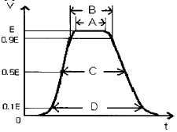
- A
- B
- C
- D
(정답률: 50%)
2과목: 전자계산기일반(대략구분)
16. 서브루틴 호출이나 인터럽트 처리와 같은 동작에서 임시 저장을 위한 지정된 메모리의 다음 주소를 보관하는 곳은?
- 상태 레지스터
- 프로그램 계수기
- 메모리 주소 레지스터
- 스택 포인터
(정답률: 36%)
17. 10진수 -113을 2진수 1의 보수로 변환하여 8bit로 표현한 것은?
- 11110001
- 01110001
- 10001110
- 10001111
(정답률: 43%)
18. 컴퓨터의 기억장치로 부터 명령이나 데이터를 읽을 때 제일 먼저 하는 일은?
- 명령 지정
- 명령 출력
- 어드레스 지정
- 어드레스 인출
(정답률: 52%)
19. 다음 flowchart 기호 중 display 장치를 나타내는 것은?
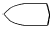
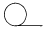
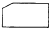
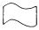
(정답률: 42%)
20. 잘못된 정보를 패리티체크에 의해 착오를 검출하고, 이를 교정할 수 있는 코드는?
- 아스키 코드
- 해밍 코드
- 그레이 코드
- EBCDIC
(정답률: 62%)
21. 마이크로컴퓨터 내부에서 마이크로프로세서와 주기억장치 및 각 주변장치 모듈 간에는 버스(BUS)를 통해 정보를 전달한다. 이 버스에 해당하지 않는 것은?
- data bus
- address bus
- register bus
- control bus
(정답률: 53%)
22. 주소 선이 8개 데이터 선이 8개인 ROM의 기억용량은?
- 1,024 바이트
- 512 바이트
- 256 바이트
- 64 바이트
(정답률: 49%)
23. 문자를 삽입할 때 필요한 연산은?
- OR 연산
- ROTATE 연산
- AND 연산
- MOVE 연산
(정답률: 49%)
24. "마이크로프로세서의 기계어 명령 형식은 ( )와( )로 구성된다" ( )안에 알맞은 용어는?
- GRAY CODE, OPERAND
- BCD CODE, OPERAND
- OP CODE, OPERAND
- OP CODE, GRAY CODE
(정답률: 66%)
25. 순서도의 역할과 거리가 먼 것은?
- 프로그램을 코딩하기가 쉽다.
- 입력과 출력의 설계를 쉽게 할 수 있다.
- 문제의 정확성 여부를 쉽게 판단할 수 있다.
- 업무의 전체적인 개요를 쉽게 파악할 수 있다.
(정답률: 40%)
26. 연산자의 기능이 아닌 것은?
- 번지 기능
- 전달 기능
- 제어 기능
- 함수연산 기능
(정답률: 38%)
27. 주기억 장치에 기억된 프로그램을 읽고 해독한 후, 각 장치에 지시신호를 전달함으로써 프로그램에서 지시한 동작이 실행되도록 하는 것은?
- 입력장치
- 출력장치
- 연산장치
- 제어장치
(정답률: 66%)
28. PCB에서 노이즈(잡음) 방지 대책 설명으로 잘못된 것은?
- 가능한 패턴을 짧게 배선한다.
- 패턴을 최대한 굵게 배선한다.
- 단층 기판이 다층 기판보다 노이즈가 덜 심하다.
- 아날로그 회로와 디지털 회로 부분은 분리하여 실장 배선한다.
(정답률: 60%)
29. 노이즈 대책용으로 사용될 콘덴서의 구비 조건과 거리가 먼 것은?
- 내압이 낮을 것
- 절연 저항이 클 것
- 주파수 특성이 양호할 것
- 자기공진 주파수가 높은 주파수 대역일 것
(정답률: 52%)
30. 디스플레이(display) 장치로 볼 수 없는 것은?
- 모니터
- 디지타이저
- LCD 모니터
- 비디오프로젝터
(정답률: 69%)
3과목: 전자제도(CAD) 이론(대략구분)
31. 도면관리 방법에 대한 설명 중 옳지 않은 것은?
- 트레이스도는 접어서 보관하지 않는다.
- 마이크로 필름을 사용하여 도면의 복원력을 높일 수 있다.
- 도면 번호는 작성순서에 따라 일련 번호를 부여하도록 한다.
- 도면은 필요할 때마다 쉽게 찾아볼 수 있도록 잘 정리하여 보관한다.
(정답률: 39%)
32. 데이터 저장장치에 속하지 않는 것은?
- CRT
- HDD
- FDD
- CD-RW
(정답률: 62%)
33. 한국산업표준규격(Korean Industrial Standards, KS)에서 전기· 전자· 통신을 규정한 분류 기호는?
- KS B
- KS C
- KS D
- KS E
(정답률: 78%)
34. 도면을 내용에 따라 분류했을 때 여러 개의 전자제품이 상호 접속된 상태를 나타내는 도면은?
- 부품도
- 공정도
- 부분조립도
- 전자회로도
(정답률: 58%)
35. 회로설계 자동화의 순서로 옳게 나열된 것은?
- 회로설계 → PCB설계 → 자동배선
- PCB설계 → 회로설계 → 자동배선
- 자동배선 → PCB설계 → 회로설계
- 회로설계 → 자동배선 → PCB설계
(정답률: 62%)
36. 패턴 설계 시 유의 사항으로 옳지 않은 것은?
- 패턴은 가급적 굵고 짧게 해야 한다.
- 패턴 사이의 간격을 최대한 붙여 놓는다.
- 배선은 가급적 짧게 하는 것이 다른 배선이나 부품의 영향을 적게 받는다.
- 전력 용량, 주파수 대역 및 신호 형태별로 기판을 나누거나 커넥터를 분리하여 설계한다.
(정답률: 71%)
37. 제도 용지에 연필로 직접 그린 그림이나 컴퓨터로 작성한 최초의 도면을 무엇이라 하는가?
- 원도
- 트레이스도
- 복사도
- 축로도
(정답률: 82%)
38. 인쇄회로기판(PCB)을 제조 할 때 사용되는 제조 공정이 아닌 것은?
- 사진 부식법
- 실크 스크린법
- 오프셋 인쇄법
- 대역 용융법
(정답률: 65%)
39. 다음 프린터 종류 중 비 충격(non impact) 프린터는?
- 활자 프린터
- 도트 프린터
- 펜 스트로크 프린터
- 레이저 빔 프린터
(정답률: 79%)
40. 제도에서 사용하는 길이의 단위로 옳은 것은?
- mm(밀리미터)
- cm(센티미터)
- m(미터)
- km(킬로미터)
(정답률: 82%)
41. 다음의 전자 부품 기호 중 트랜지스터 기호로 옳은 것은?
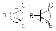
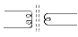
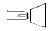
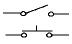
(정답률: 84%)
42. 다음 전자부품 기호 중 발광 다이오드 기호로 옳은 것은?
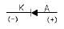
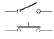
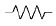
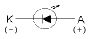
(정답률: 78%)
43. PCB를 사용하여 전자기기를 제조하였을 때 얻을 수 있는 장점이 아닌 것은?
- 대량 생산의 효과가 높다.
- 제품의 균일성과 신뢰성이 높다.
- 잡음, 온도 등이 안정 상태를 유지한다.
- 소량 다품종 생산에 적합하고, 비용이 저렴하다.
(정답률: 70%)
44. 실물 보다 작게 그리는 척도는?
- 실척
- 축척
- 배척
- NS
(정답률: 81%)
45. 일반적으로 전자캐드(CAD)에서 회로도를 그리는 프로그램으로 통칭하는 용어는?
- Layout
- Schematic
- Gerber
- CAM
(정답률: 60%)
46. 다음 기호의 명칭은?
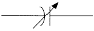
- 가변 저항기
- 가변 콘덴서
- 고정 저항
- 스위치
(정답률: 76%)
47. 프린트 기판 설계시 배선으로 인한 인덕턴스 발생을 줄이기 위한 방법으로 가장 올바른 것은?
- 전원라인을 가늘고, 길게 배선한다.
- 전원라인을 가늘고, 짧게 배선한다.
- 전원라인을 굵고, 길게 배선한다.
- 전원라인을 굵고, 짧게 배선한다.
(정답률: 77%)
48. 다음 그림과 같이 전자 제품의 전체적인 동작이나 기능을 간단한 기호나 직사각형과 문자로 그린 도면의 명칭은?
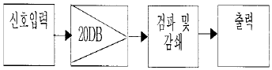
- 배치도
- 블록도
- 배선도
- 결합도
(정답률: 79%)
49. 기기에 사용되는 각종 부품들을 실제의 모양으로 표현하여 설계와 제작의 효율성을 기하기 위하여 작성한 도면의 명칭은?
- 접속도
- 배선도
- 계통도
- 블록도
(정답률: 39%)
50. PCB Artwork에서 부품을 꽂는 부분의 동박 면을 무엇이라 하는가?
- hole
- point
- pad
- line
(정답률: 68%)
51. PCB Artwork에서 배선하는 과정을 나타내는 용어는?
- route
- line
- hole
- point
(정답률: 57%)
52. 한국산업규격-국제표준화기구-국제전기표준회의에 대한 규격 기호 및 규격 명칭이 순서대로 옳게 연결한 것은?
- KS-ANSI-IEC
- KS-IT-ISO
- KS-ISO-IEC
- KS-ISO-JIS
(정답률: 81%)
53. 한쪽 방향으로만 전류를 통과시켜 교류를 직류로 바꾸는 소자는?
- 다이오드
- 트랜지스터
- 전해 콘덴서
- 전기장 효과 트랜지스터
(정답률: 63%)
54. 세라믹 콘덴서의 외부에 104라는 숫자가 적혀있다. 이 콘덴서의 용량은?
- 1㎌
- 0.1㎌
- 0.01㎌
- 0.001㎌
(정답률: 59%)
55. 전자 캐드의 약어 중 옳지 않은 것은?
- CAM : Computer Aided Manufacturing
- CAD : Computer Aided Design
- CAE : Computer Aided Epoxy
- DRC : Design Rule Check
(정답률: 66%)
56. 전자부품 기호 중에서 전해콘덴서의 전기용 도시 기호는?
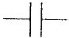
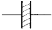
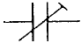
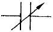
(정답률: 63%)
57. 그림과 같이 4색으로 표시되어 있을 때 저항 값은?
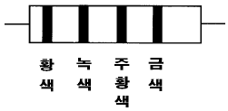
- 25 ㏀
- 35 ㏀
- 45 ㏀
- 65 ㏀
(정답률: 73%)
58. 기판의 절연물 특성이 아닌 것은?
- 내열성
- 내진성
- 방습성
- 기계적 강도
(정답률: 37%)
59. CAD용 소프트웨어의 구성이라고 볼 수 없는 것은?
- 그래픽 패키지
- 응용 프로그램
- 응용 데이터 베이스
- MGA(Mono-chrome Graphic Adapter)
(정답률: 62%)
60. 새로운 부품을 생성하고자 할 때 반드시 거쳐야 하는 과정이 아닌 것은?
- 부품의 정의
- 부품 디자인
- 부품에 핀 배치
- 부품의 크기 변경
(정답률: 51%)